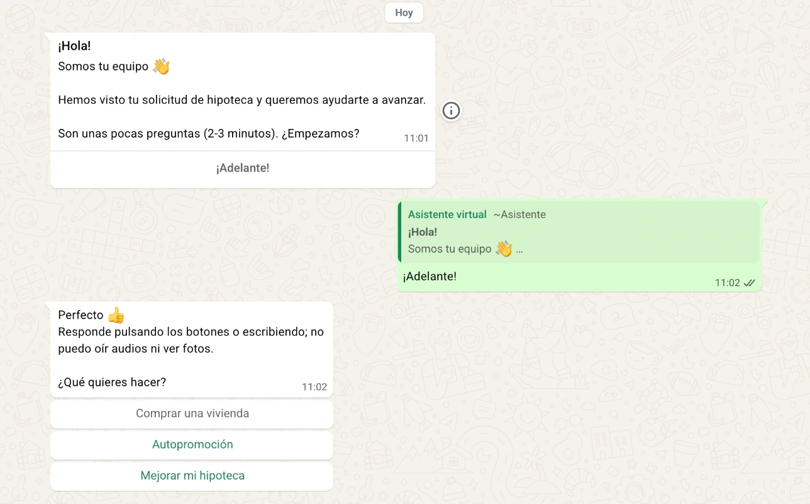
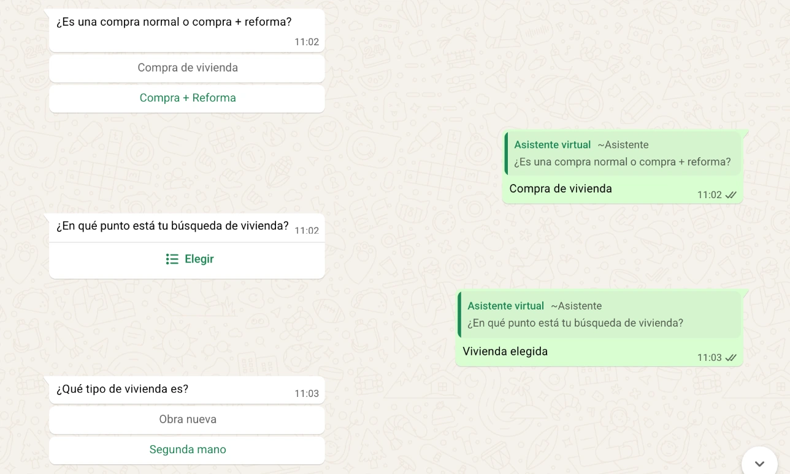
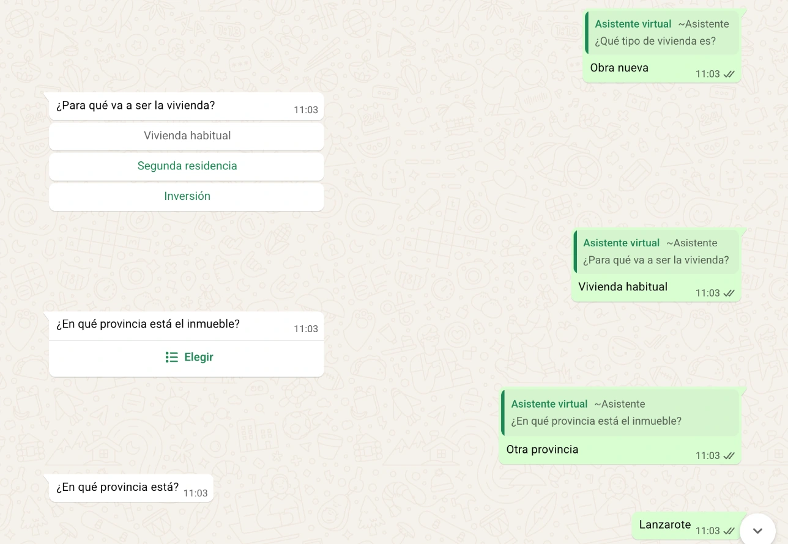
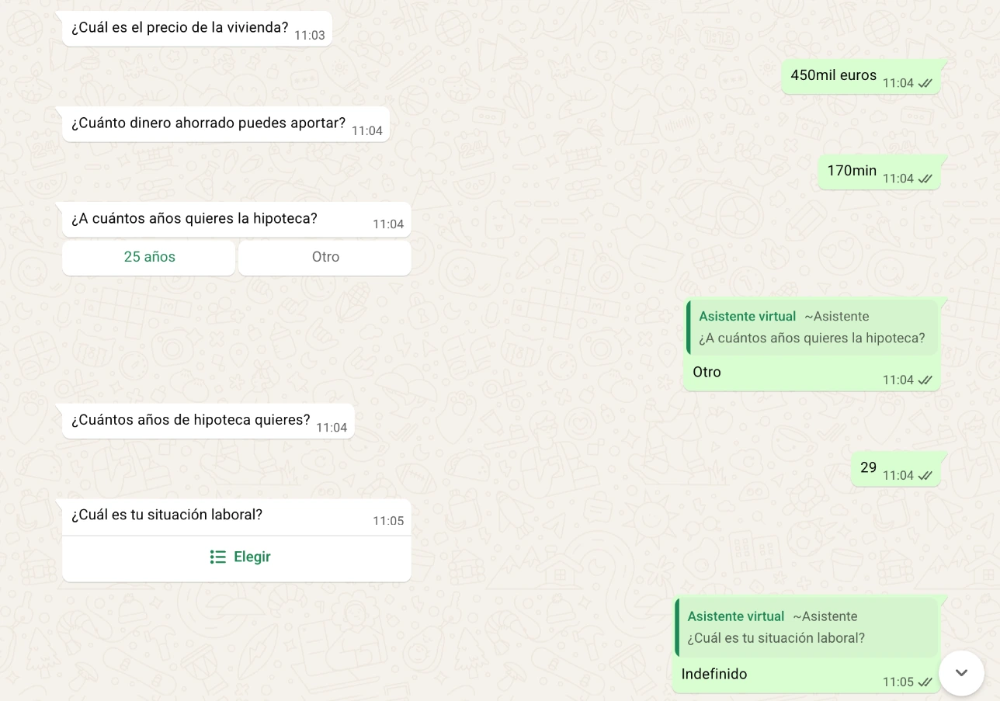
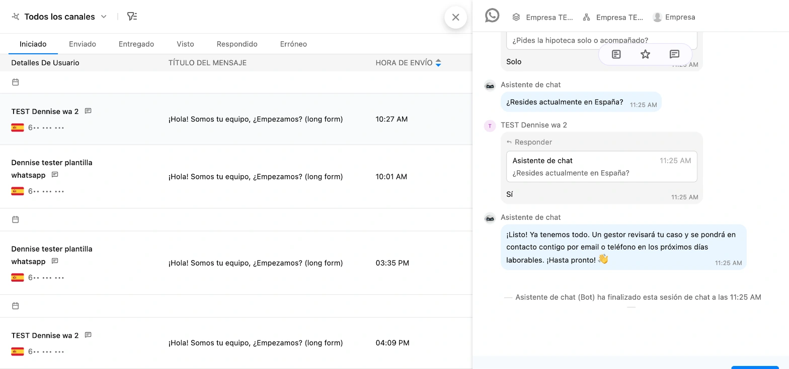

Proyecto 2 · Asistente de chatTodos los proyectos
Un chat que entiende lo que el cliente escribe, aunque lo escriba a su manera.
Recoge por mensaje los datos que hacen falta para empezar, en el chat de la web, en WhatsApp o en el canal que use la empresa. El cliente contesta como quiere y cuando quiere, y cada dato queda apuntado limpio en su ficha.
El chat con el cliente
AsistenteHola, Marta. Para empezar con su solicitud necesito tres datos. ¿Se los pregunto por aquí?
Martavale
Asistente¿Qué presupuesto tiene, más o menos?
Martaunos 20 mil
Asistente¿En qué provincia?
Martasoy de valencia capital
Asistente¿Para cuándo lo necesita?
Martacuanto antes, este mes si puede ser
AsistenteGracias. El equipo ya tiene sus datos.
Lo que entiende y apunta
«unos 20 mil»20.000 €
«soy de valencia capital»Valencia
«cuanto antes, este mes si puede ser»Cuanto antes
Guardado en la ficha. Si el guardado falla, el equipo recibe una tarea con las respuestas.
La conversación real










Qué cambia
Antes, alguien del equipo tenía que pedir los datos uno a uno y apuntarlos a mano.
Para el cliente
Contesta por mensaje, con sus palabras y cuando le viene bien.
Para el equipo
Recibe los datos ya ordenados en la ficha. Si algo falla al guardarlos, le llega una tarea con todas las respuestas.
Qué hice yo
- Decidí qué se pregunta y qué respuestas se dan por buenas en cada pregunta.
- Hice que primero se apliquen reglas sencillas y que la IA solo entre cuando esas reglas no bastan.
- Preparé una salida para los fallos: si los datos no se guardan, el equipo recibe una tarea con todo lo contestado.
Hecho conZoho SalesIQ · WhatsApp Business · Cloudflare Workers · Claude · Python